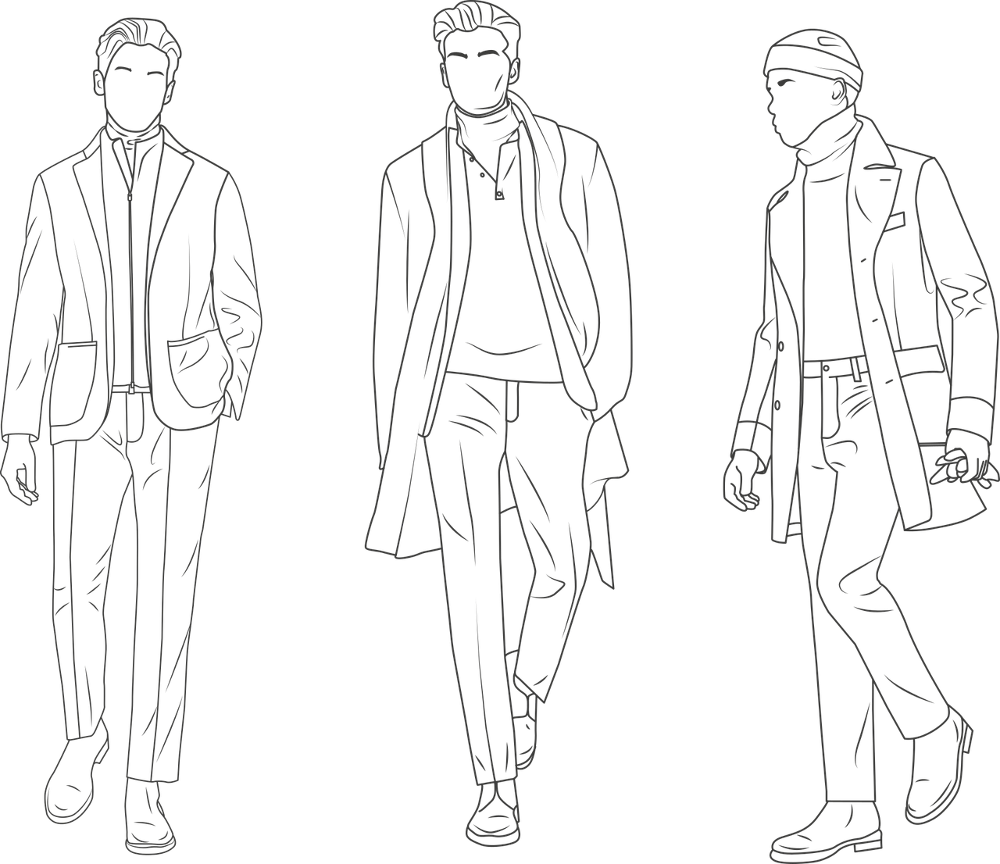

This is a basic landing page!
This is a landing page that I am using to make a cool looking website that I can add to my resume.
Hopefully this website shows off what I have learned using CSS and HTML!
Hopefully this website shows off what I have learned using CSS and HTML!
